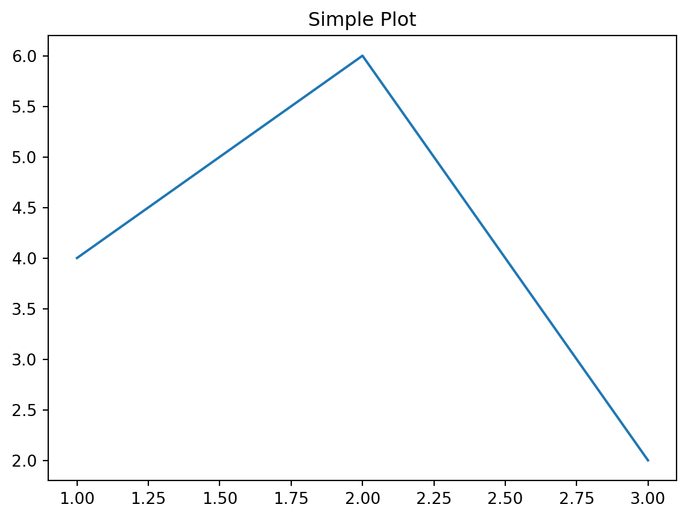
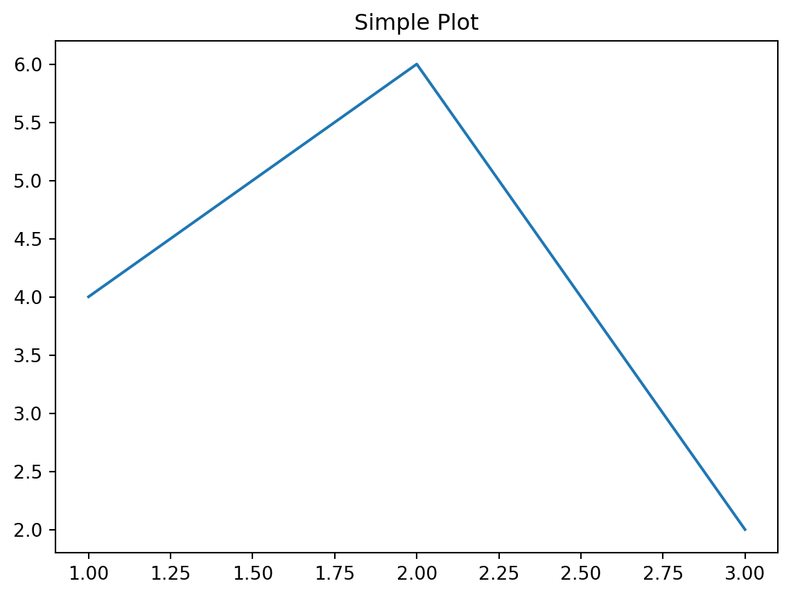

Show the code
- 1
-
Load
matplotlibmodule - 2
- Create the plot and show it


The main common output formats are
You can take a look at the Quarto gallery to see the possibilities.
Due to the structure of the documents, the same input quarto document can be rendered as many different output formats without major changes.
The configuration of the different output formats needs to be added in the YAML header.
Additionally, we need to install some dependencies depending on the language of preference
report.qmd---
title: "Example Report"
author: "My name"
date: today
format:
html:
toc: true
html-math-method: katex
css: styles.css
pdf:
keep-tex: true
fontsize: 11pt
highlight-style: a11y
biblio-title: "Bibliography"
classoption: "numbers=noenddot,abstract=on,oneside"
---
## Introduction
This document shows a simple code example.
```{python}
#| echo: true
#| code-fold: true
#| code-summary: "Show the code"
#| fig-align: center
#| fig-label: simple_plot
x = [1, 2, 3]
y = [4, 6, 2]
import matplotlib.pyplot as plt #<1>
plt.plot(x, y) #<2>
plt.title("Simple Plot") #<2>
plt.show() #<2>
```
1. Load `matplotlib` module
2. Create the plot and show it
```{python}
#| echo: false
#| label: tbl-planets
#| tbl-cap: Astronomical object
from IPython.display import Markdown
from tabulate import tabulate
table = [["Sun","696,000",1.989e30],
["Earth","6,371",5.972e24],
["Moon","1,737",7.34e22],
["Mars","3,390",6.39e23]]
Markdown(tabulate(
table,
headers=["Astronomical object","R (km)", "mass (kg)"]
))
```To render the document to the desired output, use render
When working on a project is occasionally better to see changes in real time as you update things. For that use preview
Below is the output of the code presented above
matplotlib module

| Astronomical object | R (km) | mass (kg) |
|---|---|---|
| Sun | 696,000 | 1.989e+30 |
| Earth | 6,371 | 5.972e+24 |
| Moon | 1,737 | 7.34e+22 |
| Mars | 3,390 | 6.39e+23 |
Quarto can render Jupyter notebooks represented as plain text (.qmd) or as a normal notebook file (.ipynb).
Quarto documentation on caching
If you are working within a project and your main concern is the cumulative impact of rendering many documents at once, consider using the freeze option.
You can use the freeze option to denote that computational documents should never be re-rendered during a global project render, or alternatively only be re-rendered when their source file changes:
---
title: "My Document"
format: html
execute:
cache: true
freeze: true # never re-render during project render
freeze: auto # re-render only when source changes
---# use a cache (even if the document options don't enable it)
quarto render example.qmd --cache
# don't use a cache (even if the documentation options enable it)
quarto render example.qmd --no-cache
# use a cache and force a refresh (even if the cells haven't changed)
quarto render example.qmd --cache-refresh